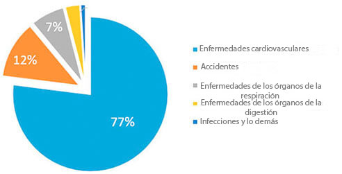
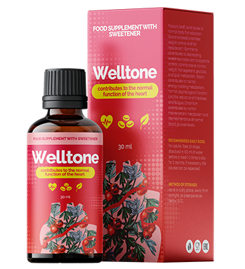

Estadística: ¡Cada 3r ciudadano mayor de 35 años muere por las enfermedades provocadas por la hipertensión!
L. Bokeria:”Yo personalmente 2020 enviaré el remedio contra la hipertensión con el descuento de 50% a los primeres lectores”
Cardiocirujano famoso, organizador de la ciéncia médica, profesor titular.
Enfermedades cardiovasculares son líderes mundiales en la cantidad de las vidas que quitan. Un 94% de los infartos e ictus ocurren precisamente por la presión elevada. En un 89% de los casos la hipertensión en caso del infarto e ictus es mortal. Si hablamos sobre los valores concretos, la hipertensión es la causa de cerca de un 77-78% de las muertes “naturales”. En cífras absolutas es cerca de 1,54 millones de las muertes en el año 2016.
“Causas de la mortalidad en elaño 2016.”
Lo más terrible es que la mayoría de las personas ni siquiera sosopecha que tiene la hipertensión. Según la estadíistica, un 67% de los hipertónicos no saben que están enfermos. Es que nadie toma en serio las oscilaciones de la presión, hasta que todo termine en una crisis hipertensiva, cuando la presión pasa de la raya ya. Pocos prestan atención a los dolores de cabeza, vértigos, debilidad, edemas de la cara, latidos del corazón acelerados, visión borros, nerviosismo. Y meintras tanto, todos estos síntomas muestran ya la presencia de una hipertensión crónica. ¡Y que es hora de tomar medidas urgente, antes de que sea demasiado tarde!
Actualmente existe el único remedio contra la hipertensión, que influye en la causa de la enfermedad, y si uno sigue las instrucciones, libra de la hipertensión por completo. Es “” un remedio alemán. Es que el remedio “” recupera completamente la tonicidad de los vasos gracias a la única fórmula científica. También el preparado baja el nivel de colesterol y normaliza el ritmo cardíaco. Es muy importante que “”no es solamente efectivo, sino también seguro para la salud, porque consiste solamente de los componentes naturales. Por eso se puede tomar “” en cualquier edad, sin temer los efectos secundarios ni complicaciones por parte de otros órganos. La eficacia y seguridad del remedio está comprobada en numerosos ensayos clínicos, en los que han participado más de 5.000 personas.
Antes “” no enviaban a todos los países, a pesar de que yo personalemente estaba negociando mucho tiempo con los productores. Pero ahora por fin, «» se puede comprarlo en nuestro país también.
Ha sido tomada una decisión de levantar las sanciones a la importación de los remedios europeros contra la hipertensión.

— Buenos días, señora Chen. Cuéntenos, por favor, ¿por qué ha sida tomada tal decisión?
— Nuestro objetivo principal es conservar la salud de la población en todo el planeta. Y si en algún lugar existe un problema, debemos resolverlo obligatoriamente. Por desgracia, de nuestro país ha llegado una estadística desconsoladora: más de un 70% de habitantes padecen de la hipertensión, y casi cada tercero muere por las enfermedades cardiovasculares. Este índice es muchas veces más alto que en otros países europeros.
— ¡Si que son cífras espantosas! Cuéntenos, por favor, ¿cómo luchan contra el problema de hipertensión en otros paíes de la Unión Europea?
— Actualmente a todas las clínicas y centros de rehabilitación europeos suministran un remedio innovador ”” que ha sido desarrollado por los científicos alemanes. La particularidad de ”” consiste en lo que él no tiene contraindicaciones y sana los vasos a un nivel celular. Permite normalizar la presión rapidamente y no admitir el desarrollo de las enfermedades cardiovasculares.
— Señora Chen, ¿es verdad que este remedio ya está al alcance en nuestro país?
— Sí, eso es lo tengo en cuenta cuando hablo de un levantamiento temporal de las sanciones a la importación de los remedios europeos contra la hipertensión. Esta decisión ha sido tomada en el más alto nivel y está aprobada. Cuando se trata de la salud de la población, no se puede hablar de las divergencias políticas.
— Cuéntenos, ¿cómo influye “” en el organismo?
— Según los resultados de las investigaciones de la Organización Mundial de la Salud, el remedio ”” tiene los siguientes efectos:
- • tonifica los vasos sangíneos;
- • baja el nivel de colesterol;
- • normaliza el ritmo cardíaco.
Actualamente tenemos la siguiente estadística:
- – en caso de la prevención de las enfermedades cardiovasculares en personas mayores de 35 años por medio del remedio”” se registra la normalización de la presión arterial en un 97% de los encuestados;
- – en caso de la prescripción del remedio “” en el periodo de recuperación después de las crisis hipertensivas sufridas, el mejoramiento del flujo sanguíneo de los vasos del cerebro se registra en un 86% de las personas.
— Señora Chen, ¡agradezco a Usted por la entrevista! Si que es una noticia excelente para todos los habitantes. Esperaremos que ahora podamos vencer la hipertensión y aumentar la esperanza de vida media de los españoles.
Comentarios